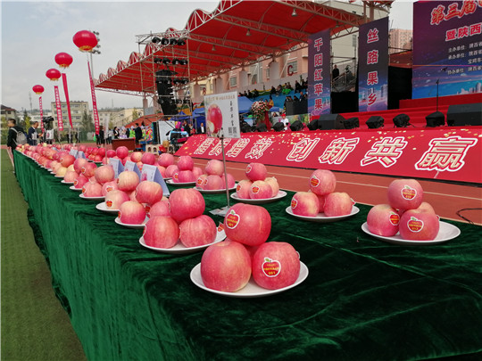
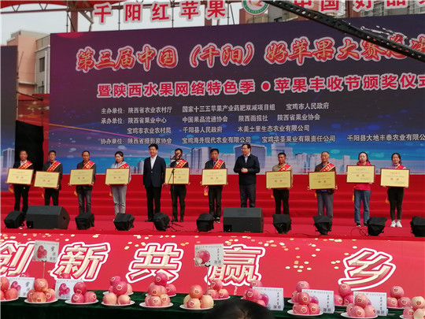

第三届中国（千阳）好苹果大赛总决赛暨陕西水果网络特色季•苹果丰收节在千阳举行
 9月21日至23日，第三届中国（千阳）好苹果大赛总决赛暨陕西水果网络特色季·苹果丰收节在千阳县体育场举行。此次活动是全省庆祝2020年中国农民丰收节暨特色农产品展销活动之一，是在全面建成小康社会、打赢脱贫攻坚战关键时刻举办的一次重要活动。 本次活动以“提质增效、创新共赢、乡村振兴”为主题，由省农业农村厅、国家十三五苹果产业药肥双减项目组、宝鸡市人民政府主办，省果业中心、中国果品流通协会、陕西画报社、省果业协会、宝鸡市农业农村局、千阳县人民政府、木美土里生态农业有限公司联合承办。 此次活动，千阳集全县之力，精心策划了中国好苹果大赛总决赛、摄影大赛、扶贫产品宣传短视频大赛、农特产品直播推介等活动，来自全国6省8市14县共69名果农同台竞技，5个品系登台亮相，21位行业专家现场打分，百名网红现场直播。全面展示了农村改革发展的巨大成就、农耕文明传承的无限活力、决胜脱贫攻坚的坚定信心和乡村全面振兴的光明前景。各县级决赛的获奖者以玉华早富、红将军、蜜脆、嘎啦等多品类早中熟苹果品种参赛。以西北农林科技大学、山东农业大学、甘肃农业大学、中国果品流通协会等苹果产业体系专家组成评委团，对参赛苹果从果行指数、硬度、可溶性固形物、着色面积、果面光洁度、口感香味、汁液脆度共7项指标进行检测评定，现场打分，最终评选出了本届好苹果大赛总决赛金、银和优胜奖。铜川市印台区鑫鑫兴种养殖农民专业合作社等5个企业和个人获得金奖，陕西省凤翔县范家寨镇范家寨村李永常等10个个人和企业获得银奖，陕西省铜川市耀州区小丘镇小丘村刁根平等15个个人及企业获得优胜奖；吴忍耐等10人获得“最佳苹果师傅”；南寨村苹果示范园等10家苹果示范园荣获“最美果园”；冯文让等10人获得首届千阳县扶贫产品宣传短视频大赛三等奖，武小雨等5人获得二等奖，邵小霞获得一等奖。